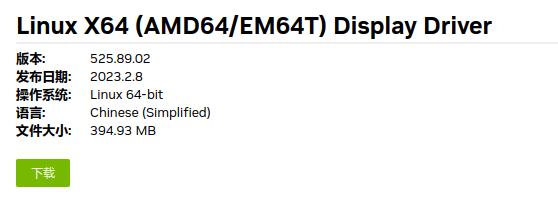

[Arch]-12-Manjaro从AMD显卡替换Nvidia显卡
引言
这篇文章记录Manjaro系统环境中，从A卡替换到N卡的过程，在替换之后出现CPU占用率从3%跳到15%反复出现，排查后发现是N卡开源驱动的问题，替换成官方闭源驱动完美解决。
文章目录
0×1.Manjaro如何将Amd卡替换成Nvidia卡
实验系统：Manjaro
主机替换前显卡：AMD
主机替换后显卡：Nvidia 3080
本来想着Manjaro已经集成了Nvidia的开源驱动，直接将A卡取出来，换上N卡完事，但进入系统后，CPU的使用率有点奇怪，监控中显示CPU的使用率在0%~15%这个区间，有规律的跳动，从0直接跳15再到0再到15，看起来就像是在跳机械舞，查阅了部分资料后，分析出问题可能出现在自带的Nouveau驱动上，需要替换安装官方的闭源驱动才行，然后就有了下面的操作：
#首先查看一下显卡型号 qing@qingsword.com:~$ lspci -k | grep -A 2 -E "(VGA|3D)" 26:00.0 VGA compatible controller: NVIDIA Corporation GA102 [GeForce RTX 3080 Lite Hash Rate] (rev a1) Subsystem: NVIDIA Corporation Device 1539 Kernel driver in use: Nouveau #用的是Nouveau驱动
根据自己显卡显示型号（GeForce RTX 3080），去下面这个N卡官方网站搜驱动
https://www.nvidia.com/Download/index.aspx
以型号（GeForce RTX 3080）为例如下图所示，点击search按钮：

搜索出来的结果，点击下载按钮：
下载下来之后，先需要禁用Nouveau驱动：
#禁用Nouveau驱动，创建下面这个文件 qing@qingsword.com:~$ sudo vim /etc/modprobe.d/nvidia-installer-disable-nouveau.conf #写入下面这两行内容 blacklist nouveau options nouveau modeset=0 #保存之后，更新数据 qing@qingsword.com:~$ sudo update-initramfs -u
进入刚才下载的官方N卡驱动文件夹：
#给.run文件添加x权限 qing@qingsword.com:~$ chmod +x NVIDIA-Linux-x86_64-525.89.02.run #安装 qing@qingsword.com:~$ sudo ./NVIDIA-Linux-x86_64-525.89.02.run #安装过程中所有的提示全部选择yes回车【用tab键切换选择】
安装完成后重启，不出意外的话，进入系统就能查看到使用的驱动为Nvidia了。
如果在安装过程中遇到问题（比如停电或者死机），重启了，这个时候很可能会卡在一个黑色屏幕进不去系统，需要重新将N卡取下来，将A卡装上去，然后重复上面安装N卡闭源驱动的过程，直到安装完成，再将替换成N卡，就能成功进入系统了：